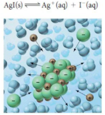

Solubility Equilibria and Solubility Product Constant
Callout
Solubility Equilibria of Ionic Compounds
- Solubility is the quantity of solute that dissolves in a given quantity of solvent at a particular temperature
- A solubility equilibrium is a dynamic equilibrium between a solute and a solvent in a saturated solution in a closed system
3.png)
Callout
The Solubility Product Constant (Ksp)
The Solubility Product Constant (Ksp) is the value obtained from the equilibrium law applied to a saturated solution.
1.png)
The Solubility Product Constant (Ksp)
This equation gives us the solubility product constant (Ksp), which is the value of the equilibrium law equation for a solubility equilibrium. The subscript “sp” distinguishes this constant from the general equilibrium constant, K. As with K, Ksp is calculated using concentrations in mol/L, and Ksp values are not.
Solubility and the Solubility Product Constant
Solubility can be expressed in two ways:
-
Molar solubility is the number of moles of solute dissolved in a given volume of a saturated solution
-
Mass per volume Solubility is the number of grams of solute dissolved in a given volume of a saturated solution
It is possible to convert between either solubility and Ksp
.png)
The Trial Ion Product (Q)
- When we know the concentrations of ions in aqueous solution, we can use a quantitative method to predict whether a precipitate will form
- The trial ion product (Q) is the concentration of ions in a specific solution raised to powers equal to their coefficients in a balanced chemical equation (essentially it is the reaction quotient for a solubility equilibrium)
- The trial ion product can be compared to the solubility product constant (Ksp) to determine whether a precipitate will form
.png)
The Common Ion Effect
The common ion effect is a reduction in the solubility of an ionic compound due to the presence of a common ion in solution
.png)